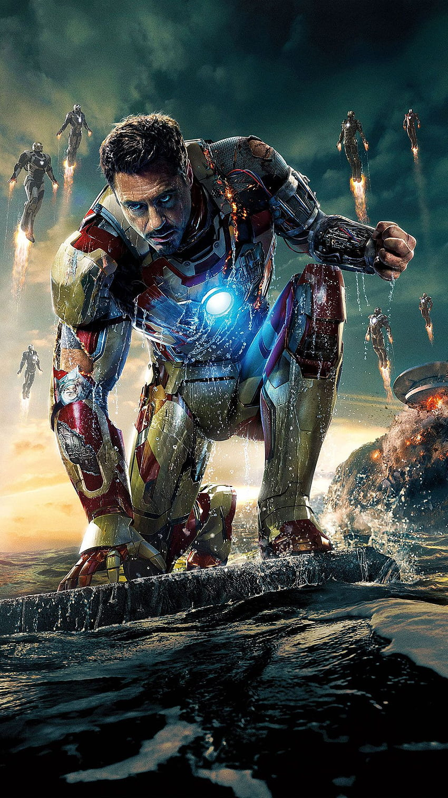

Robert John Downey Jr. is an American actor. His career has been characterized by critical and popular success in his youth, followed by a period of substance abuse and legal troubles, before a resurgence of commercial success later in his career. ;Born: 4 April 1965 (age 58 years), Manhattan, New York, United State. ;Children: Indio Falconer Downey ;Parents: Robert Downey Sr., Elsie Ford
Tony Stark's confidence is only matched by his high-flying abilities as the hero called Iron Man.

Tony Stark. Genius, billionaire, playboy, philanthropist. Son of legendary inventor and weapons contractor Howard Stark. When Tony Stark is assigned to give a weapons presentation to an Iraqi unit led by Lt. Col. James Rhodes, he's given a ride on enemy lines. That ride ends badly when Stark's Humvee that he's riding in is attacked by enemy combatants. He survives - barely - with a chest full of shrapnel and a car battery attached to his heart. In order to survive he comes up with a way to miniaturize the battery and figures out that the battery can power something else. Thus Iron Man is born. He uses the primitive device to escape from the cave in Iraq. Once back home, he then begins work on perfecting the Iron Man suit. But the man who was put in charge of Stark Industries has plans of his own to take over Tony's technology for other matters

Copyright ©Jithedra Evuri 2023